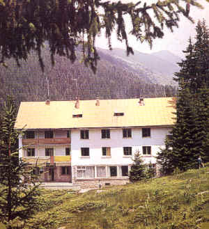
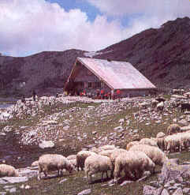
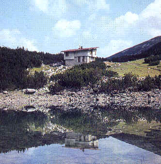

|
Р. Стайнов Албина |
|  х. Каменица [Беговица] (97 легла) |
 з. Тевно езеро |
|  х. Сини връх [Синаница] (50 легла) |
1. ден - 18.08
София - гр. Сандански - х. Яне Сандански
Пътуване с кола или автобус до гр.
Сандански и
оттам с кола до х. Яне Сандански
Събиране на групата на х.Яне Сандански: 14:00 часа, може и по-рано с допълнителна уговорка
х. Яне Сандански (1230) - х.
Каменица (1750) - 2 часа
Спане в х.
Каменица - условията
са добри.
2. ден - 19.08
х.
Каменица (1750) - Кози превал (2476) - з.
Тевно езеро (2512)
- 3:30
часа
по желание:
з.
Тевно езеро
(2512) - вр. Каменица (2822) - 3 часа
или вариант:
Кози превал (2476) - вр. Каменица (2822) и обратно
"Ако пък ли у вас се е запазил още живец и желание за покоряване
можете
да продължите надясно към вр. Каменица (2822м). Изкачването му не е
сложно, а и гледката от върха е незабравима."
Нощуване
на з.
Тевно езеро
на палатки или на тясно в заслона. През нощта температурата пада до 0
градуса! Да се носят топли дрехи, добре е да имате и спален чувал.
"Лежи непосретствено на брега на Тевното езеро.
Представлява масивна
двуетажна сграда с капацитет 30 места. До заслона има разпънати
палатки, в които също можете да пренощувате. Когато заслона е
препълнен, палатките са по-добрия избор.
Водата за пииене е в съседство до заслона. Недейте да пиетe от езерото,
освен ако не искате да имате един "незабравим" ден. Тоалeтните са извън
заслона."
"Ако имате време можете да се изкачите до
върховете Валявишки чукар (2664) и Момин двор (2725). От тях се
откриват красиви гледки към Валявишките езера и Самодивски връх (2730).
Възможно е и изкачване на вр. Кралев двор (2680), но това трябва да
става много внимателно."
"... от заслона "Спано поле". Там спахме вечерта в едни бунгала, чиито покриви бяха боядисани като червени мухоморки. На следващия ден тръгнахме към Тевно езеро. По пътя се натъкнахме на някъв пастир с 3 овчарски кучета - едно с неопределена порода, един пекинез и детето на пекинеза, което приличаше на пекинез, ама не точно... На Тевно както винаги беше страхотно. Имахме късмет и не ни валя през ноща, но затова пък имаше бая купести облаци. Аз направих опит да се изкъпя! Баните са ги махнали за съжаление и трябваше да се мия в кенефа над една огромна дупка за екскременти. Бях си приготвил и 2 шишета с езерна вода, която се опитах да затопля на слъце. Нямах голям успех. Няма да разправям как се мие сапун от т. и г. с "мека" вода с температура около 10 градуса! През ноща до палатките ни дойдоха да пасът некви коне. Нямам против стига единия да нямаше камбанка на врата, която да дрънчи постоянно! Чуваше се и конско преживяне... По някое време започнаха да ровят и в нашите тенджерки и тогава Гого стана и ги изгони с псуване. Девойките спаха в заслона и казаха, че било ужасно горещо."
3. ден - 20.08
з.
Тевно езеро
(2512) - Мозговишка порта (2520) - Чаирски превал (2445)
- з. Спано поле (2030) - 4 часа
в обратна посока
з. Спано поле (2030) - Синанишка порта (2426) - х.
Синаница (2190) - 2
часа
Маршрутът е дълъг и изисква добра организация и
дисциплина.
От Тевно езеро за 20-на мин. с леко изкачване се достига до Мозговишка
порта. От нея с подсичане на сипеен склон се достига до Чаирски превал.
Следва леко спускане
и вървена по равното до заслон Спано поле. Голямото качване е
оттам до Синанишката порта, и накрая спускане от портата до хижата.
Спане
в х.
Синаница - условията
са сравнително добри.
4. ден - 21.08
х.
Синаница (2190) - Синанишка порта (2426) - х. Яне Сандански (1230)
-
3 часа
х. Яне Сандански - София
Пътува се с кола или до гарата на гр. Сандански
с автобус и оттам с автобус или с влак.
Имена
на хижи, порти, превали и върхове:
х. Каменица = х. Беговица
х. Синаница = х. Сини връх
Кози превал = Беговишка порта = Каменишка порта
Чаирски превал = Чаирска порта = Винарска порта
Мозговишка порта = Превалска порта = Валявишка порта = Демянишка порта
Синанишка порта = Синивръшка порта = Разцепнишка порта
Муратов връх = Гранитен връх
Дженгал = Самодивски връх
| Последна промяна на 16.08.2006. | Стар
вариант на сайта. |